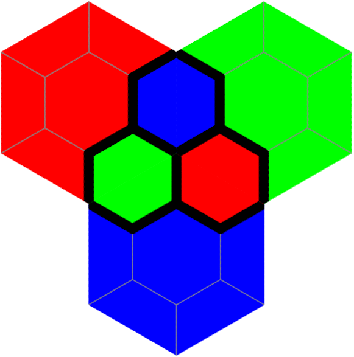

Atreya
An abstract tile-based board game for 2-3 players
Atreya is an abstract region-forming tile placement game with complete information for 2-3 players that is played with a set of 168 hexagonal tiles [PDF] and is loosely inspired by Carcassone and Hive. Like in Carcassone, you get points for closing regions. Like in Hive, the pieces are hexagonal and can be moved after placing them.
{kind=link}
The reasoning behind the tiles is explained in a separate article. The name Atreya is a pun on Advaya, because the dva in Advaya means two in slavic languages, whereas tre sounds more like three, referring to the fact that Atreya is an Advaya modification for up to three players.
(Also check out the sister game Advaya, at least to see its more fancy tile set.)
Atreya Rules
The rules are preliminary, feel free to experiment with them!
First we need some simple terminology. A tile is one of the hexagonal cards, the smaller hexagon in the center is a piece, surrounded by half-pieces that become pieces when paired with other matching half-pieces. Pieces of different color are separated by the boundary (the black lines). From the pool of unplayed tiles a tile is played by validly placing it next to other tiles in the arena. A hole is an area of missing tiles inside the arena. A shape is a connected area that spans over multiple tiles and consists of multiple pieces. Notice that a shape can contain more than one piece from the same tile. The size of a shape is the number of different pieces it consists of. A shape is closed if it is completely surrounded by the boundary. A piece on a tile is free if it is not part of a closed shape. The freedom of a tile is the number of pieces that are free. A tile is weakly pinned if at least one piece is not free and strongly pinned if no piece is free. Adjacent pieces are neighbors and two shapes are neighbors if two of their pieces are neighbors. A shape dominates a neighboring shape if it has strictly larger size.
With three players, the colors have the following relationships: red is inferior to blue, blue inferior to green, and green inferior to red (“water extinguishes fire, nature absorbs water, fire burns nature”). With only two players, the unused third color is inferior to both player colors, whereas those are not inferior to any other color. A closed shape is healthy, if along its boundaries the number of neighboring pieces and half-pieces of an inferior color is at least as large as of a non-inferior color (“keep your boundaries safe”), otherwise it is poisoned. Domination and health have consequences for scoring.
Objective of the game
The game can be played in multiple modes of increasing intricacy and length.
Max: The player closing the first shape of their color that consists of 3 or more tiles wins (notice that it’s tiles and not pieces, 3 pieces is too easy).
This yields a game similar to Palago, but with a different tile set and feeling to it.
Sum: Each player tries to maximize the total size of all closed shapes of their color. A tile is declared as pinned if it is weakly pinned (this matters for the allowed moves and means that a tile can be moved at most once). The score is updated every time a shape is closed.
This is the most Carcassonnesque variant with somewhat relaxed shape building. It allows for some more long-term planning and makes the game more forgiving.
Dom: Like Sum, but when a shape is closed by a player, then the player only gets points for the shape, if it is both healthy and not dominated. Additionally, the player gets bonus points for neighboring shapes that were already closed and become dominated by the player’s shape at the time it is closed.
The new rules add an additional layer of strategy, as now closed shapes and their location still matter after the initial scoring. Also the creation of larger shapes is incentivized, but can be poisoned by opposing players.
Preparation
Decide on the player colors and who will start. In the case of two players, one color is not owned by a player.
Place the three start tiles as depicted to form the initial arena. Place all the other tiles to the side, forming the pool of tiles for both players.
Allowed moves
When it is your turn, you can either:
-
place a tile from the pool in a matching way next to other tiles in the arena, or
-
move an already played, but unpinned tile so that its freedom decreases.
In both cases, the tile may be flipped before placing it.
Notice that whether a tile is pinned depends on the chosen game mode, which determines whether weak or strong pinning is used.
In any case you have to ensure that at every point in time:
-
all tiles in the arena touch at least two other tiles, and
-
no hole is inside in the arena.
Game end
In the Max variant, the game ends when the first sufficiently large shape is completed.
In all other variants the game ends when no move is possible, i.e:
-
all tiles in the pool that can be played have been played, and
-
no unpinned tile in the arena can be moved in a freedom-decreasing way.
Notice that it suffices to check tiles along the arena boundary, because holes are forbidden and hence inner tiles cannot be moved anyway. As every tile can be used in a move only 1-6 times (depending on the chosen variant and situation), the game will eventually reach an end.
It still can be tedious to verify the second condition, so the game may also be ended earlier, if both players agree to do so.
That’s it! Print out the tiles and have fun exploring this game!
If you have constructive feedback, strategic insights or improvement ideas, don’t hesitate to contact me. As the game is new and not battle-tested, I am sure that some experienced players of this kind of games have something valuable to say.